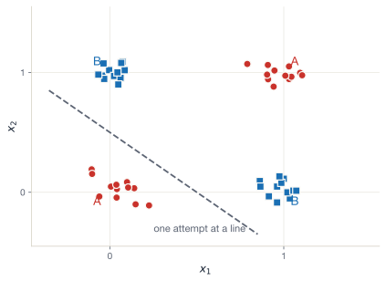

Lecture 2 — From a single neuron to a network
August 4, 2026
The word “neural network” comes from a 1940s analogy to biological neurons:
A very loose abstraction:
Warning
The metaphor is historical, not scientific. Modern deep learning is not trying to be neuroscience.
The name is sticky. You can think of every “neuron” in this course as just “a particular small computation with weights”.
A single input x goes in. A single number y comes out:
y = f(x) = w x + b
Two toggles we can adjust
That’s it. Two numbers!
Pick concrete values: w = 2, b = 1.
If x = 3:
\begin{aligned} wx &= 2 \times 3 = 6 \\ y = wx + b &= 6 + 1 = 7 \end{aligned}
Try it yourself What is y if w = 0.5, b = -1, x = 4?
Answer y = (0.5 \times 4) + (-1) = 2 - 1 = 1.
We pushed an input value x (the data) through the model from left to right.
We call this forward propagation (or the forward pass).
Every neural network works the same way:
Stop & check
So far, we have computed exactly one prediction using a single input value
What if we have several features, not just one?
Let \mathbf{x} = \begin{bmatrix} x_1 & x_2 & x_3 \end{bmatrix} — a row vector of three features.
Each feature deserves its own weight:
\mathbf{w} = \begin{bmatrix} w_1 & w_2 & w_3 \end{bmatrix}
The combined signal is the dot product:
\mathbf{w} \cdot \mathbf{x} = w_1 x_1 + w_2 x_2 + w_3 x_3
Note
Note that the dot product still returns a single number.
Predict turnout in the 2024 UK General Election
The 2024 UK General Election had a 59.7% turnout (lowest since 2001).
Imagine we want a model that predicts whether a voter actually turned out.
Three features, all normalised to [0, 1]:
A perceptron, with my guess at the weights:
A 45-year-old voter on £40k who voted in 2019:
Forward pass:
\begin{aligned} y &= 1.5(0.44) + 0.7(0.29) + 2.0(1) + (-1.5) \\ &= 0.66 + 0.20 + 2.0 - 1.5 \\ &= 1.36 \end{aligned}
A “turnout score” of 1.36 so likely to vote.
Tip
Real turnout models built on British Election Study data look much like this — same features and fitted weights.
Stop & spot it
The prediction we just wrote out is:
y = w_1 x_1 + w_2 x_2 + w_3 x_3 + b
Does this look familiar?
Rename the weights: y = \beta_1 x_1 + \beta_2 x_2 + \beta_3 x_3 + \alpha
This is linear regression Our perceptron is a linear regression model — we just relabelled the symbols.
Hopefully you have seen this before!
To do anything more interesting we first need to stack neurons.
If a single neuron is just regression, what’s all the fuss about?
A single neuron is linear
It can draw a straight line (or hyperplane) to separate two classes.
It cannot fit curves, stepwise changes, multiple gradients.
Most real social and computational problems are not linearly separable.
How do we make the model more capable?
That should give us more expressive models by having more parameters that can “interact”
But (!) stacking alone cannot add non-linearity
Stop & check
Try this — 5 minutes in pairs
Your colleague says: “A simple perceptron model mimics a neuron – it receives a signal, decides whether to amplify it, and passes it onto the next neuron.”
Is that right? What’s missing?
A defensible answer Some of it is right – the neuron metaphor is genuinely useful when we think of “amplification” as weighting and biasing. But, the weight could make it smaller. And a simple perceptron model has only a single node, so there’s no “passing it on” in this case.
≈ 20 min · pen and paper, in pairs
You will compute three forward passes by hand.
The model
A linear perceptron with three inputs.
Weights: w_1 = 0.4, \ w_2 = -0.3, \ w_3 = 1.1 Bias: b = 0.2
For each of the following inputs, compute y = \mathbf{w} \cdot \mathbf{x} + b:
| Input | x_1 | x_2 | x_3 |
|---|---|---|---|
| A | 1 | 2 | 0 |
| B | 0 | 0 | 1 |
| C | 0.5 | 1 | -1 |
Bonus We have written the model as an equation. Can you convert this into a functional form over \mathbf{x},\mathbf{w},b?
Linear perceptron outputs
Bonus f(\mathbf{x},\mathbf{w},b) = \mathbf{w} \cdot \mathbf{x} + b
We’re going to be doing a lot of dot products this August!
Every layer of every neural network is built out of this exact operation — a dot product plus a bias. No matter how complicated the architecture, it will rely on this very basic maths.
A single linear neuron gives: y = w_1 x_1 + w_2 x_2 + b
As we’ve said, this is a line (or a hyperplane in higher dimensions).
Predict Could a single neuron classify this dataset?
Two features x_1, x_2, two classes:
Answer No. No single line separates A from B in this arrangement.
A linear perceptron cannot solve XOR. This is a result by Minsky & Papert that nearly ended neural networks in 1969
Visualizing the XOR dataset

Class A sits on two opposite corners, and Class B on the other two.
Wherever you draw a line, at least one cluster is placed on the wrong side. Datasets like this are called not linearly separable.
The natural next moves
We have one linear neuron. It can only draw lines.
What if we stack more of them?
Draw many parallel lines, then chain those into another layer.
Add more parallel lines that take the original lines as inputs!
Not only can we learn multiple representations by using multiple neurons…
Note
Spoiler: unfortunately, this alone won’t be enough!
Take a layer of, say, three neurons that all see the same inputs:
This is one hidden layer of width 3. Three nodes can — in principle — represent three different “concepts” extracted from \mathbf{x}. With non-linearities, they can each capture a different non-linear feature.
For one hidden layer of three nodes, with three inputs each, we have 9 weights. We can stack them into a matrix:
\mathbf{W} = \begin{bmatrix} w_1^{(1)} & w_2^{(1)} & w_3^{(1)} \\ w_1^{(2)} & w_2^{(2)} & w_3^{(2)} \\ w_1^{(3)} & w_2^{(3)} & w_3^{(3)} \end{bmatrix}, \qquad \mathbf{b} = \begin{bmatrix} b_1 & b_2 & b_3 \end{bmatrix}
Now the whole hidden layer’s pre-activation is one matrix product: \mathbf{h}_{\text{pre}} = \mathbf{x} \mathbf{W}^\mathsf{T} + \mathbf{b}
Shape check: (1 \times 3) \cdot (3 \times 3) + (1 \times 3) \to (1 \times 3). ✅
Note
Don’t worry if the transpose looks fiddly — we’ll spend (a lot) more time on the linear algebra tomorrow.
So a layer’s forward pass is \mathbf{X} \mathbf{W}^\mathsf{T} + \mathbf{b}, where biases broadcast across rows.
Tip
PyTorch follows this convention. Numpy can be made to. Some textbooks (e.g. Goodfellow et al.) use the opposite convention with column vectors. Don’t be confused if you see \mathbf{Wx} in one paper and \mathbf{xW}^\mathsf{T} in another — they’re the same thing, rotated.
Take the hidden layer’s output and feed it straight into a second layer (no transformation in between, for now):
\mathbf{h}^{(1)} = \mathbf{x} \mathbf{W}^{(1)\mathsf T} + \mathbf{b}^{(1)} \hat{y} = \mathbf{h}^{(1)} \mathbf{w}^{(2)\mathsf T} + b^{(2)}
The whole network is the composition of these layers:
\hat{y} = \big(\mathbf{x}\,\mathbf{W}^{(1)\mathsf T} + \mathbf{b}^{(1)}\big) \,\mathbf{w}^{(2)\mathsf T} + b^{(2)}
A “deep linear” network is just this pattern repeated — matmul → bias → matmul → bias → …
Setup for a two-layer linear network
\mathbf{x} = \begin{bmatrix} 1 & 2 & 3 \end{bmatrix}, \quad \mathbf{W}^{(1)} = \begin{bmatrix} 1 & 2 & 3 \\ 4 & 5 & 6 \end{bmatrix}, \quad \mathbf{b}^{(1)} = \begin{bmatrix} 1 & 2 \end{bmatrix} \mathbf{w}^{(2)} = \begin{bmatrix} 1 & 2 \end{bmatrix}, \quad b^{(2)} = 1
Step 1 — hidden layer
\mathbf{h}^{(1)} = \mathbf{x} \mathbf{W}^{(1)\mathsf T} + \mathbf{b}^{(1)} = \begin{bmatrix} \underbrace{1\cdot1 + 2\cdot2 + 3\cdot3}_{= 14} & \underbrace{1\cdot4 + 2\cdot5 + 3\cdot6}_{= 32} \end{bmatrix} + \begin{bmatrix} 1 & 2 \end{bmatrix} = \begin{bmatrix} 15 & 34 \end{bmatrix}
Step 2 — output
\hat{y} = \begin{bmatrix} 15 & 34 \end{bmatrix} \begin{bmatrix} 1 \\ 2 \end{bmatrix} + 1 = 15 + 68 + 1 = \mathbf{84}.
You just ran a forward pass through a two-layer network by hand.
The operations never get more complicated than this. The matrices just get bigger!
Note
A real-world two-layer network for our voter-turnout problem might have 3 inputs, 64 hidden units, and 1 output — that’s 64 + 1 = 65 numbers in \mathbf{b} (one bias per hidden unit, plus one for the output) and 3 \times 64 + 64 \times 1 = 256 numbers in \mathbf{W}. Still the same operations, repeated.
Let’s look at the network end-to-end
The full forward pass:
\hat{y} = \big(\mathbf{x}\,\mathbf{W}^{(1)\mathsf T} + \mathbf{b}^{(1)}\big) \,\mathbf{w}^{(2)\mathsf T} + b^{(2)}
Expand the brackets:
\hat{y} = \mathbf{x}\,\underbrace{\mathbf{W}^{(1)\mathsf T} \mathbf{w}^{(2)\mathsf T}}_{\text{another matrix}} + \underbrace{\mathbf{b}^{(1)} \mathbf{w}^{(2)\mathsf T} + b^{(2)}}_{\text{another scalar}}
The collapse This is still just \hat{y} = \mathbf{x} \mathbf{W}^* + b^* for some combined matrix and bias.
Two linear layers collapse into one linear layer. A 100-layer linear network is mathematically identical to a 1-layer linear network. Depth, on its own, buys us nothing.
The fix: a small non-linear step between layers
Add a non-linear function \sigma between each linear layer:
\mathbf{h}^{(1)} = \sigma\!\left( \mathbf{x} \mathbf{W}^{(1)\mathsf T} + \mathbf{b}^{(1)} \right), \qquad \hat{y} = \mathbf{h}^{(1)} \mathbf{w}^{(2)\mathsf T} + b^{(2)}
Because \sigma is non-linear, we can no longer combine the two matrix multiplies into one. The network can now bend between the layers
Theoretically, this is the move that really matters
Common activation functions
Sigmoid
\sigma(z) = \dfrac{1}{1 + e^{-z}}
tanh
\sigma(z) = \tanh(z)
ReLU
\sigma(z) = \max(0, z)
Tip
We’ll return to these activation functions in proper detail on Day 5 (PyTorch implementation), and again on Days 6, 9, 10.
For now just know that adding any of these between linear layers is what makes flexible deep learning possible.
≈ 20 min · pen and paper, in pairs
A two-layer network. Identity activation throughout.
\mathbf{W}^{(1)} = \begin{bmatrix} 0.5 & -0.5 \\ 1.0 & 0.5 \end{bmatrix}, \quad \mathbf{b}^{(1)} = \begin{bmatrix} 0 & 1 \end{bmatrix} \mathbf{w}^{(2)} = \begin{bmatrix} 2 & -1 \end{bmatrix}, \quad b^{(2)} = 0.5
Compute \hat{y} for \mathbf{x} = \begin{bmatrix} 2 & 4 \end{bmatrix}.
Bonus What changes if we swap the bias term b^{(2)} from 0.5 to -0.5? Does it change \hat{y}? By how much?
Hidden layer pre-activation
\mathbf{x} \mathbf{W}^{(1)\mathsf T} = \begin{bmatrix} 2 & 4 \end{bmatrix} \begin{bmatrix} 0.5 & 1.0 \\ -0.5 & 0.5 \end{bmatrix} = \begin{bmatrix} 1 - 2 & 2 + 2 \end{bmatrix} = \begin{bmatrix} -1 & 4 \end{bmatrix}
Add bias: \begin{bmatrix} -1 & 4 \end{bmatrix} + \begin{bmatrix} 0 & 1 \end{bmatrix} = \begin{bmatrix} -1 & 5 \end{bmatrix}
Output
\hat{y} = \begin{bmatrix} -1 & 5 \end{bmatrix} \begin{bmatrix} 2 \\ -1 \end{bmatrix} + 0.5 = (-2) + (-5) + 0.5 = -6.5
Bonus Changing b^{(2)} from 0.5 to -0.5 subtracts 1 from \hat{y} — answer becomes -7.5. A linear shift; nothing else changes.
In every example so far, I just wrote down values for \mathbf{W} and \mathbf{b}.
Question For real data, how do we choose those numbers?
Answer We don’t! The model uses an algorithm to update and find a good solution.
The numbers should be those that make \hat{y} match y_{\text{true}} as closely as possible across our training data.
Two pieces of standard ML and a DL specific algorithm:
1. A way to measure “how wrong”
A function — the loss — that compares prediction to truth.
For continuous outcomes: squared error. For probabilities: cross-entropy. We’ll meet both.
2. A way to know which way to nudge each parameter
For each weight, “if I increase this by \epsilon, does the loss go up or down? By how much?”
That’s a gradient.
3. A way to compute those gradients automatically
For a network with millions of parameters, we can’t differentiate by hand.
We need an algorithm that walks the network’s structure and computes gradients itself.
This is backpropagation.
Tomorrow (Day 3)
We cover the tools we need:
Thursday (Day 4)
We use those tools.
Repeat.
By the end of Thursday’s lab, you’ll have written backpropagation by hand!
Two flavours of modelling
Predictive (discriminative)
Generative
The same machinery — matmul + activation + loss + gradient — drives both. The differences are in:
Where you are at the end of Day 2
You can now:
Tip
That is the conceptual core of the course. The next ten lectures expand outwards from this — but the centre is here.
Goals
In a Colab notebook, you will:
Deliverable: a one-page notebook with predictions for a hold-out set, plus a short paragraph: “Where does the two-layer model beat the perceptron? Where doesn’t it?”
Tip
This lab does not involve PyTorch yet. We’re keeping the operations in plain numpy so the algebra you just did stays visible.
Lecture 3 — Computational graphs & the maths of AI
Optional pre-reading tonight: 3Blue1Brown, Essence of Linear Algebra chapters 1–3 (≈30 min). The intuitions there will save you a lot of grief tomorrow.
ME324 · AI and Deep Learning · LSE Summer School